Mia Minnes
minnes@ucsd.edu
EBU3b (CSE) 4206
Computer Science and Engineering
University of California, San Diego
9500 Gilman Drive, La Jolla, CA 92093-0404
Welcome!
I am a Teaching Professor and the Vice Chair for Undergraduate Education in the Computer Science and Engineering Department. At UC San Diego, I primarily teach discrete math for CS and introduction to computability, as well as the TA training classes. My research interests are in Automata Theory and Computability education, along with SoTL and projects that support professionalization pathways for students, including industry internships, professional development of peer mentors and teachers, and ethics and communication.
Grants and Awards
- NSF Grant DUE-2337253 (2024-2027), PI in collaboration with Union College (DUE-2337251), Bard College (DUE-2337252), and Furman University (DUE-2337254)
- UC San Diego Assessment Grant (2023-2025), PI
- (Inaugural) UC San Diego Student Centeredness Award (2023-2024)
- NSF Grant CNS-2137928 (2021-2025), PI
- Course Development and Instructional Improvement Program (CDIIP) Grant (2021-2022), PI
- UC San Diego Academic Senate Distinguished Teaching Award (2020)
- Teaching+Learning Commons Faculty Fellow (2018-2019)
- Course Development and Instructional Improvement Program (CDIIP) (2017-2018), PI
- AVC Academic Advising Innovation Grant (2015-2017), PI
- NSF Grant DUE-1451521 (2014-2016), co-PI
- Jacobs School of Engineering Teacher of the Year - by student ballot (2013-2014)
- NSF Grant DMS-1060351 (2010-2014), PI
- NSF Grant DMS-0901005 (2009-2010), PI
Projects
Connecting academics and professional goals: Internships and Peer teaching
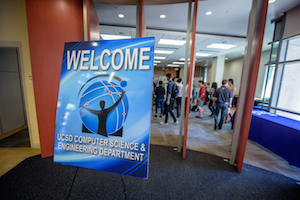 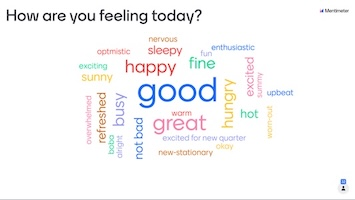
I work with students to develop professional skills outside the context of core classes. I teach a companion class for CSE majors taking industry internships. In this class, students work to identify and deepen the connections between their UCSD studies and real-world problems presented in off-campus internships. Students reflect on the growth of their professional, problem-solving, and technical skills over the internship, as well as the ethical and societal impact of their work. At the culmination of this course, students present posters at the Summer Internship Symposium early in the Fall Quarter. The Symposium celebrates our students' accomplishments and strengthens the ties between the CSE department and our alumni and industry colleagues.
The Summer Internship Symposium was featured in the UCTV CSE Channel https://youtu.be/wYV-ixiwE6E.
I also teach the professional development classes taken by all first-time CSE tutors and all first-time CSE teaching assistants. This hands-on class builds on educational literature and gives many opportunities for role playing, skill building, and feedback.
My role: Founder and CSE197/CSE191 Faculty Sponsor (2014-present); Class websites; Symposium website. Co-curriculum developer for CSE95 and CSE599 (2014-present).
TA/tutor training related publications:- "Designing TA Training for Computer Science Graduate Students: Remote and Self-paced Options for A Supported Introduction to Reflective Teaching". Mia Minnes. SIGCSE 2022, pp. 752-758 https://doi.org/10.1145/3478431.3499342
- Poster analyzing who obtains industry internships, by undergraduate researchers Bradley Chester, Anthony Hernandez, Jose Salazar, Abel Seyoum through UC San Diego's Early Research Scholars Program ERSP group poster, 2022.
- "What Do CS Students Value in Industry Internships?" Mia Minnes, Sheena Ghanbari Serslev, Omar Padilla. ACM Transactions on Computing Education (Volume 21, Issue 1) https://doi.org/10.1145/3427595, March 2021.
- "Attitude shifts and transformation during Computer Science and Engineering Student Internships" Mia Minnes, Sheena Ghanbari Serslev, Madison Edwards. ASEE's Virtual Conference (Paper ID #30094) https://drive.google.com/open?id=1d4oNyNTC5ZksnMugL0cH0A9tVhA7mSU9, 2020.
- "Practice Makes Deeper? Regular Reflective Writing during Engineering Internships" Mia Minnes, John Mayberry, Melissa Soto, Jace Hargis. Journal of Transformational Learning (Volume 4, Number 2) https://jotl.uco.edu/index.php/jotl/article/view/195", 2017.
Student experiences of a large computing program
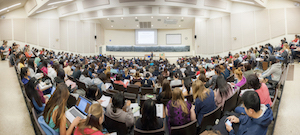We study ways to improve the experiences and outcomes for students in large undergraduate computing programs. The NSF-funded Peer-led Academic Cohort Experiences program: CSE-PACE focuses on the experiences of incoming students. In older work, NSF-funded Micro-Classes project researched emulating the community and academic support of small classes within a large lecture setting.
My role: PI (2021-2025), co-PI (2014-2017)
CSE-PACE related publications:
- "Welcoming Students to Undergraduate Computer Science Programs: On-ramps, Rest Areas, and Lane Changes" Niharika Bhaskar, Amari N. Lewis, Rona Darabi, Joana Fang, Jingting Liu, Kristen Vaccaro, Joe Gibbs Politz, Mia Minnes. 2024 SIGCSE TS. ACM Digital Library entry.
- "Comparing Student Social Networks and Academic Experiences in Computing and Biology Courses" Amari N. Lewis, Kristin Tenney, Kristen Vaccaro, Joe Gibbs Politz, Mia Minnes. 2023 Conference on Research in Equitable and Sustained Participation in Engineering, Computing, and Technology (RESPECT) Slides.
- "Taking the Next Course: Facilitators and Barriers Reported by Computer Science Majors" Amari N. Lewis, Joe Gibbs Politz, Kristen Vaccaro, Mia Minnes. ASEE '23 https://drive.google.com/file/d/1C0bJVvTNRr8Zxr9lgzB2LA_oepkEdJme/, Slides.
- "Lost in the crowd, rising above it, or somewhere in the middle?" Invited talk at: Illinois Computer Science Summer Teaching Workshop, June 5-6, 2023. Slides
- "Learning about the Experiences of Chicano/Latino Students in a Large Undergraduate CS Program" Amari N. Lewis, Joe Gibbs Politz, Kristen Vaccaro, Mia Minnes. ITISCE '22 https://dl.acm.org/doi/abs/10.1145/3502718.3524780
Micro-Classes related publications:
- "Micro-Classes: A Structure for Improving Student Experience in Large Classes" Christine Alvarado, Mia Minnes, and Leo Porter. SIGCSE '17 Pages 21–26. 2017. https://doi.org/10.1145/3017680.3017727
- "Lightweight Techniques to Support Students in Large Classes" Mia Minnes, Christine Alvarado, Leo Porter. SIGCSE '18 Pages 122–127. https://dl.acm.org/citation.cfm?id=3159601
Interactive visualization of formal computation
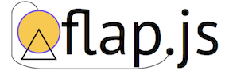Online tool to build, simulate, and test automata and other formal models of computation. This student-built product is being piloted for use by CSE 105 students and is inspired by JFLAP. Try out the app https://flapjs.web.app/ and see the GitHub Repo https://github.com/flapjs.
The project was kick-started with the CSE Undergraduate Summer Research program, featured on UC TV: https://www.youtube.com/Ac2juu3VrAE.
My role: Faculty mentor (2018-present)
Computing Paths and OCCTIVE
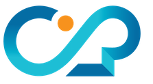 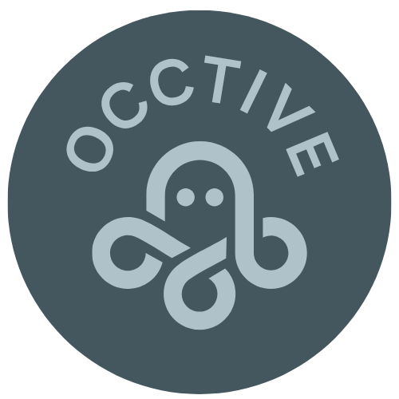
ComputingPaths hosts resources and advising for undergraduate UC San Diego students interested in career paths related to computing. Video interviews with current students, alumni, faculty, and advisers, as well as highlighted projects and student organizations on ComputingPaths. Supported by an Advising Innovation grant from the Vice Chancellor-Student Affairs and Associate Vice Chancellor for Academic Affairs and Dean of Undergraduate Education, and by the CSE Department. OCCTIVE is a multi-institutional, NSF supported project to support introductory programming and computational problem solving instruction in non-CS courses. OCCTIVE videos are hosted at https://occtive.github.io/www/index.html, and the new site being developed by the student team: https://melvyn9.github.io/OCCTIVE/#/ Student team developing, curating, and maintaining the ComputingPaths content: Melvyn Tan (2022-present). Nicole Go and Tanvi Vidyala (2025). Zhiying Guan, Tyler Lo, Yash Potdar, Melvyn Tan, Catherine Tang, Cindy Wang (2022). Daphne Nong, Joey Dang, Steven Steiner, Ronak Shah (2021-2022). Gary Xie, Peter Phan, Shawn Gao, Olivia Miano, Andrea Sudharta, Alex Yang (2018, 2019). Kimberly Au, Justin Cai, David Duplantier, Oliver Engel, Shawn Gao, Andy Hwang, Catherine Kim, Paul Llanura, Vylana Trang, Caris Wei (2017) Huang Li, Kitty Qiu, Nicolette Valicenti, David Lai, Jill Zhang, Yash Rathi, Jiaying He, Dorothy Yen (2015-2016)
My role: PI (2015-present); http://computingpaths.ucsd.edu. UCSD PI (2024-present); https://melvyn9.github.io/OCCTIVE/#/.
Related presentations: UC Academic Advising Conference 2018, annual Admissions Team presentations.
Grading: Adaptive rubrics and oral exams
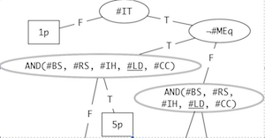
Grading serves an important pedagogical role, both in giving feedback to students to support their learning and in certifying this learning. Effective and efficient grading at scale presents multiple challenges. The adaptive rubrics project is joint work with Marco Carmosino, proposing a new framework for grading based on exploratory data analysis to mine insights on population statistics of learning outcome achievements across the class, along with efficient and consistent grading at scale. Drawing lessons from emergency remote instructions, colleagues and I explored oral exams as a modality for authentic, integrous evaluation of student learning. Across multiple projects, we explored different instantations of oral exams, designing for scale, student sense of belonging, and academic integrity.
My role: Co-author/co-lead (2019-2023)
Oral exams related publications:- "Stream Your Exam to the Course Staff: Asynchronous Assessment via Student-Recorded Code Trace Videos" R.S. Lim, M. Minnes, J.G. Politz. SIGCSE 2023, pp. 144–150. https://doi.org/10.1145/3545945.3569803, 2023.
- "Oral exams for large-enrollment engineering courses to promote academic integrity and student engagement during remote instruction" M. Lubarda, N. Delson, C. Schurgers, M. Ghazinejad, S. Baghdadchi, A. Phan, M. Minnes, J. Relaford-Doyle, L. Klement, C. Sandoval, H. Qi. IEEE FiE https://dl.acm.org/doi/abs/10.1145/3328778.3366946, 2021.
- "Adaptive Rubrics" Marco Carmosino and Mia Minnes. SIGCSE '20 Pages 549-555 https://dl.acm.org/doi/abs/10.1145/3328778.3366946, 2020. Video presentation.
Open Educational Resources
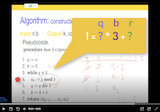
Developed website infrastructure to build, host, and display accessible, affordable class material for easy adoption and remixing by other instructors. The infrastructure supports multi-format sources, including plain text, LaTeX, pdf, and html and automates the creation and maintenance of and accessible and organized website to access all these materials. With CDIIP-funding (joint with Joe Politz), proof-of-concepts websites for discrete math and theoretical computer science were built, as well as a standalone template, all available on GitHub. Student team: Aiko Coanaya (2022-2023), Akanksha Pandey (2022).
- CSE Template on Github
- https://github.com/cse-template/cse-template.github.io
My role: PI (2017-present); CSE 20 Podcast Highlights
Related publication:
- "Podcast Highlights: Targeted Educational Videos From Repurposed Lecture-capture Footage" Mia Minnes, Christine Alvarado, Max Geislinger, and Joyce Fang. SIGCSE '19 Pages 365-371 https://dl.acm.org/doi/10.1145/3287324.3287465
Effective Randomness

Algorithmic randomness is an active part of computability theory which classifies and works to understand objects which look random to all effective processes. Ongoing work studies the interaction between notions of randomness and the underlying models of computation.
Related publication:
- "Probabilistic algorithmic randomness" Sam Buss and Mia Minnes. The Journal of Symbolic Logic, 78(2), 579-601. 2013 doi:10.2178/jsl.7802130
Automatic Structure Theory
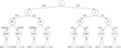What is the descriptive and algorithmic power of restricted computational models? In particular, what are the mathematical consequences of encoding structures using finite automata, transducers, or other efficient machines? The study of automatic structures has its roots in complexity theory and computability theory.
Related publications:
- PhD Thesis (Cornell 2008)
- "Deciding the isomorphism problem in classes of unary automatic structures" Jiamou Liu and Mia Minnes. Theoretical Computer Science, 412 (18), 1705-1717. 2011 https://doi.org/10.1016/j.tcs.2010.12.045
- "Injection Structures Specified by Finite State Transducers" Sam Buss, Douglas Cenzer, Mia Minnes, and Jeffrey B. Remmel. LNTCS,volume 10010, 2016. https://link.springer.com/chapter/10.1007%2F978-3-319-50062-1_24,
- For others, see publication list on DBLP
Coursera MOOC: Intermediate Java Software Engineering Specialization
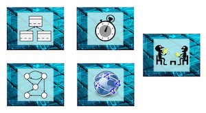In this four-course (plus a capstone project) sequence, we cover intermediate topics in software development, including object-oriented programming, data structures, algorithms and analysis, and testing, along with soft skills and technical communication. We launched the first course September 15, 2015.
My role: Co-creator and co-instructor; Specialization page on Coursera
Related publication:- "Experience Report: Designing Massive Open Online Computer Science Courses for Inclusion" S. Krause-Levy, M. Minnes, C. Alvarado, L. Porter. ITiSCE 2021, pp. 95-101. https://doi.org/10.1145/3430665.3456340.
CAMSEE
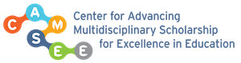The Center for Advancing Multi-disciplinary Scholarship for Excellence in Education is a university-wide community focussed on undergraduate education. With regular bi-weekly meetings, special visitors, and dedicated workgroups, we form cross-campus connections and work on projects that build on our shared experiences and multiple perspectives.
My role: Member of the Steering Committee (2015-2020, 2023-2025); Website
Computer Science and Engineering Student Society
This student organization connects students interested in Computer Science for social activities, professional development, tech talks, networking opportunities, and outreach.
My role: Community faculty advisor (2017-present); Website
Outreach
I've been honored to participate in numerous outreach projects promoting CS and STEM specifically to all students. Recent activities include:CSE Women in Computing
Activities: Girls' Day Out keynote speaker (2015, 2016, 2017, 2018), Faculty Office Hour panelist (2016, 2017)
Jacobs School of Engineering IDEA Center
Activities: TritonPREP Faculty lunch (2017, 2022), SPACES Admit Day Panel (2015)
Girls' Angle (Website)
Girls' Angle is a club whose mission is to "foster and nurture girls' interest in mathematics and empower them to be able to tackle any field no matter the level of mathematical sophistication". Club members meet for regular problem solving meets, where they are mentored by undergraduate math majors, graduate students, and postdocs. The Women in Mathematics Video Series is intended for a wider audience. Each video explains of pieces of math accessible to students in middle and high school.
Activities: Advisory board member (2008-present), club mentor (2008-2009), video contributor (2011), Math Collaboration host (2018)
NCWiT (Website)
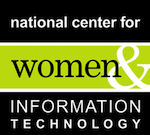The National Center for Women and Information Technology provides resources and support for educators seeking to broaden representation of women in CS. UCSD CSE received a grant from NCWiT to study enrollment patterns of women in our undergraduate programs and to implement initiatives for recruiting and retention. I served on the committee for this project.
Society for Women Engineers 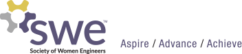
Activities: Envision Professor Panel (2018), MIT WiSE High School Outreach, Academic program speaker (2009)
Research Advising
As of Fall 2025 REAL portal is no longer available; when a replacement is created, I will post opportunities there. In the meantime, please check your email, the CSE undergraduate student newsletter, and student organization announcements for opportunities. Other faculty also advertise on Handshake (formerly Port Triton). The Computing Research Association (CRA) has information on summer research opportunities and advice (both general and practical) on graduate school in CS on Conquer (http://conquer.cra.org) . Advice about a PhD in Computer Science and Engineering can be found at https://mycsphd.org/.
- Dissertation committee member for Austin Zuckerman, MSED PhD (2023-2025).
- Dissertation committee member for Kristin Tenney, MSED PhD (2023-2025).
- Research exam member for Isamel Villegas: "U.S. Latines in Computing: A Review of the Literature" (2023)
- Undergraduate research with Joana Fang (VERSA scholar), Jingting Liu, and Rona Darabi (Summer 2023)
- Joana, Jingting, and Rona led qualitative and quantitative analysis of pilot data from the first year of CSE-PACE (see project description).
- Research exam member for Hayden McTavish: "Mismatches in Exam Performance among Pair Programming Students" (2023)
- Undergraduate research with Rona Darabi, Mingyang (Chimingyang) Huang, Jeannie Kim, Iman Malhi, Malcolm (Jooahn) Park, Winnie She, Jackson (Zhicheng) Wang, Hinn Zhang (Fall-Spring 2022)
- The student research assistant team conducted interviews with CSE-PACE participants following an IRB-reviewed protocol (see project description).
- Undergraduate research with Yutong Chen, Rona Darabi, Bryan Min, Zelong (Alan) Wang, Hinn Zhang (Summer 2022) The student curriculum development team prototyped and built lesson plans for CSE-PACE cohort activities and designed the program website (see project description).
- Undergraduate research with Aiko Coanaya and Akanksha Pandey (Winter 2022)
- Aiko and Akanksha articulated design principles for course websites serving as instructor-generated class OER and built the infrastructure for a protoype. (see project description)
- Undergraduate research with Diana Issatayeva (Winter, Spring 2021)
- Diana did a systematic comparison of JavaScript compiler performance in processing static pages, specifically for the Flap.js web app.
- Mentor Jeffrey Liu Regents' Scholars Research Initiative (Fall 2020)
- Jeffrey studied languages recognizable by two-state DFAs.
- MSED Doctoral Research rotation on TA Professional development: Adriana Corrales (Spring, Summer 2018)
- Quantitative and qualitative analysis of effects of the first TA experience on teaching self-efficacy and career directions. Specifically exploring the role of professional development activities on shaping this impact.
- Educational tool development: Maya Bello, Andrew Kuo, Lixuan Lang, David Osuna, Noah Solomon, Xuanqiang (Eric) Zhao (Summer 2018)
- Web-app automata simulation tool, porting JFLAP to JavaScript and extending its functionality. (see project description)
- Undergraduate research with James McDougall (Summer 2018, co-advised with Christine Alvarado)
- Longitudinal tracking of impact of an educational initiative on retention in computing and course performance.
- Undergraduate research (CSE 198) with Joyce Fang and Max Geislinger (Spring 2018, co-advised with Christine Alvarado)
- Data analysis to compare the usage of full-lecture podcast videos with podcast highlights videos (see project description).
- Undergraduate research (CSE 198) with Gustavo Umbelino (Summer, Fall 2017 co-advised with Christine Alvarado)
- Statistical analysis of longitudinal effects of pre-college CS experiences on students'
performance and persistence in
CS classes..
Best Paper award for CS Education Research in SIGCSE 2018, reprinted in ACM Inroads. - Undergraduate research (CSE 198) with Marjan Salamati-Pour, Xinghua (Jerry) Zhou, Emily Chou, Jonathan Perapalanunt, and Abhishek Kumar (Winter 2017 co-advised with Christine Alvarado)
- Educational data mining of Podcast and Piazza data.
- Mentor Khoa Tran Regents' Scholars Research Initiative (Fall 2016)
- Khoa explored finite-state machines and algorithmic problem solving using Picobot.
- Undergraduate research (CSE 199) with Jordan Yoshihara (Winter 2015)
- Jordan is running a case study on ALEKS, an educational technology tool, and is exploring the use of technology in K-12 education.
- Undergraduate research (CSE 199) with Shuyu Mao (Winter 2015)
- Shuyu is learning about and implementing pieces of natural language processing.
- Mentor Matthew Kleinsmith through California Louis Stokes Alliance for Minority Participation (CAMP) Science Program (Summer 2014)
- One of UCSD's Academic Enrichment Programs, CAMP is federally funded by a grant from the
National Science Foundation
(NSF) with the purpose of increasing the diversity of student participation in science,
technology, engineering,
and mathematics (STEM) majors.
Matthew worked on a research project on transducers (input-output automata) and models of computation for functions. - Reading Course (Math 199) with Artem Mavrin (Spring 2012)
- Artem worked through the first several chapters of Kunen's updated Set Theory book.
- Reading Course (Math 199) with David Marcus (Winter - Spring 2012)
- David worked through notes on Algebra and Logic covering the syntactic and semantic Lindenbaum algebras.
- UROP with Maria Monks (Spring 2010)
- Maria studied finite automaton presentable groups. In particular, she looked at a generalization of Thurston automatic groups (finitely generated groups whose Cayley graphs are recognisable by finite automata) using asynchronous automata. Her results can be found on the arXiv.
- UROP with Steven Ji (Spring 2009, Fall 2009)
- Steven studied finite automaton presentations of the rational numbers. He has results about the ubiquity of presentations that can be extracted from the lexicographic ordering.
- UROP with Anna Loparev (Fall 2008)
- Anna learned about finite automaton presentable sets of strings and sets of trees. She provided connections between the definitions of labelled trees and finite automata on strings. Throughout, cardinality questions came up and Anna became more familiar with arguments involving countable and uncountable sets.
Classes
Many UC San Diego class websites can be accessed on the webspace archive http://cseweb.ucsd.edu/classes/ . More recent classes may be on Canvas https://canvas.ucsd.edu/.
Introduction to Object Oriented Programming in Java
- UCSD CSE 8A Catalog Description
- Fall 2018 Course website Note on using JShell to introduce Java
Discrete Mathematics for Computer Scientists
- UCSD CSE20 Catalog description
- Spring 2024 (in person offering) Course website. Standards-based grading. Active learning through worksheets in class; weekly formative quizzes + open-ended group homework assignments + individual projects with videos + final exam.
- Fall 2021 (in person offering) Course website. Active learning through worksheets in class; weekly formative quizzes + open-ended group homework assignments + individual projects with videos + final exam.
- Winter 2021 (remote offering) Course website. Asynchronous video content with synchronous problem solving and Q+A sessions; weekly formative quizzes + open-ended group homework assignments + individual projects with videos + (low stakes) final quiz.
- Winter 2020 (emergency pivot to remote right before final exam) Course website.
- Fall 2019 Course website. In-class peer instruction and worksheets; weekly three part homework assignments (individual warmup + open-ended group assignment + individual followup questions), midterm and cumulative final (with portion that can replace midterm score).
- Spring 2019 Course website. In-class peer instruction and worksheets; weekly three part homework assignments (individual warmup + open-ended group assignment + individual followup questions), midterm and cumulative final (with portion that can replace midterm score).
- Fall 2017 Course website. In-class peer instruction with accompanying asynchronous formative quizzes; "podcast highlights" videos and extra practice questions supplementing lecture and homework; follow up homework "wrappers".
- Spring 2016 Course website. In-class peer instruction and formative quizzes in discussion sections; extra practice questions supplementing lecture and homework; open-ended weekly group homework; two exams and a final.
- Winter 2016 Course website. In-class peer instruction and formative quizzes in discussion sections; open-ended weekly group homework; two exams and a final.
- Fall 2014 Course website. Formative weekly reading quizzes and in-class peer instruction. Weekly open-ended group homework; two in-class tests and final exam.
- Fall 2013 Course website. Formative pre-class reading quizzes and in-class peer instruction. Practice homework assigned but not graded; four in-class tests and final exam. Optional open-ended exploratory project.
- Spring 2013.
Mathematics for Algorithm and Systems Analysis
- UCSD CSE21 Catalog description
- Fall 2015, Fall 2013 (in person offerings) Course website. Weekly homework through WeBWorK + midterm and final exams.
Theory of Computability
- UCSD CSE105 Catalog description
- UCSD CSE198 Seminar: Advanced topics in computability
- Winter 2025 Course website.
- Fall 2024 Course website. Standards based grading.
- Winter 2024 Course website.
- Spring 2023 Course website. In-person offering with review quizzes, homework, midterm, project, final.
- Spring 2022 Course website. In-person offering with new course website infrastructure, including learning outcomes and multiple formats for course content.
- Spring 2020 Course website. Remote offering supplemented with asynchronous video content; weekly formative quizzes + open-ended group homework assignments + individual projects with videos + (low stakes) final quiz.
- Spring 2019 seminar Course website. NP problems.
- Winter 2019 Course website. In-person offering with weekly engagement through class/discussion attendance and/or review quizzes. Two-part weekly homework assignments that are pair-optional. Two in-class tests plus a two-part final exam.
- Spring 2018 Course website
- Winter 2018 Course website
- Fall 2017 seminar Course website. Models of Computation.
- Spring 2017 Course website
- Spring 2017 seminar Course website. Kolmogorov Complexity.
- Fall 2016 Course website
- Spring 2014 Course website
Internship companion classes UCSD CSE191, CSE197
Teaching Methods in Computer Science
- UCSD CSE599 Catalog description and Overview and Canvas sites (Spring 2025)
- UCSD CSE 95 Catalog description and Canvas sites (Winter 2025,Spring 2024, Winter 2024, Winter 2023,Fall 2022)
- Spring 2022, Fall 2022. CSE 599 Websites not yet archived.
- Spring 2021, Winter 2021, Fall 2020. Remote offerings.
- Fall 2019 , Spring 2019, Winter 2019. In-person offerings.
- Fall (2017,2016, 2015, 2014) FA17 website, FA15 website. In person offerings.
Elementary Mathematical Logic UCSD Math 160A-B Description
Introduction to Computability and Undecidability MIT 18.511 Description
Undergraduate Seminar in Logic - Kolmogorov Complexity MIT 18.504 Description
Introduction to Mathematical Reasoning UCSD Math 109 Description
Course website (Sp11) Course website (Wi14)
Abstract Algebra I UCSD Math 100A Description
Modern Algebra I UCSD Math 103 Description
Discrete Math & Graph Theory UCSD Math 154 Description
Calculus UCSD Math 10A, MIT 18.01A/18.02A, Cornell Math 111 Description
Math 10A website 18.01A website Cornell website (Blackboard)
Introduction to Differential Equations UCSD Math 20D Description
Archived projects
Summer Academy for Incoming Transfer Students (Website)
Summer Academy serves incoming transfer students entering UC San Diego in the Fall quarter typcially from a community college. It is a five-week program where students take gateway courses for their major that are not typically offered at community colleges. The Academy also includes advising and other activities to help students smoothly transition to UC San Diego.
My role: Mentor training and CSE Seminar lead (2016)
SPIS: Summer Program for Incoming Students (Website)
SPIS (pronounced "spice") gives students college-level exposure to computer science, emphasizing problem-solving, communication skills, and mathematical modeling. It is a 5-week residential summer program on the UC San Diego campus for students accepted into CSE majors as well as for other UCSD admitted students who want to explore computer science as a career option. Students in the program interact with a wide range of CSE faculty and learn about computer science and engineering research. They also have opportunities to connect with engineers from the computer industry. SPIS provides an excellent student experience with individual meetings with faculty, tutoring from experienced CSE undergraduate students, collaborations with fellow students, individual advising to smooth the transition to UCSD, and living on campus.
My role: SPIS Faculty (2013-2016)
Communication (Website)
MathDL Mathematical Communication is a developing collection of resources for engaging students in writing and speaking about mathematics, whether for the purpose of learning mathematics or of learning to communicate as mathematicians. This site originated in the MIT Department of Mathematics, which offers about ten communication-intensive courses, many of which are led by a different instructor each semester. The department created a website to engage and support this community of instructors and to facilitate the archiving of course materials and the gleaning of “good practices” for these courses. In 2010 the NSF awarded an NSDL grant to make the site public, and it is now hosted by the Mathematical Association of America as part of MathDL.
My role: Site concept and design, contributor.
If you would like to request a reference letter
- Join my queue early
- Writing a strong recommendation letter takes thought and time.
At least one month before the earliest application deadline you have, send me an
email and provide the following information:
- What are you applying for? Is it a specific program / scholarship or a suite of similar applications (graduate programs / REUs / conference funding sources)? Please include the names of all programs you're considering. Except in extenuating circumstances, I ask that you limit the number of programs I'll be sending the letter to 8-10 applications.
- Why are you applying? and Why are you a strong applicant? Understanding your motivations and why you are a good fit for the program you're applying will help me write a strong and specific letter of support. At this stage in the process, I don't need a draft of your application material, but I'm happy to read one if you have it.
-
How might a letter from me support your application? A highly effective
letter
of recommendation typically has details of multiple interactions where the letter
writer can point to specific reasons why the applicant is well suited for their
goal.
To help me determine if I can write a strong letter, please include a summary
of the context(s) in which I have seen your work.
- If you were a student in a class I taught, include the class and the quarter as well as the letter grade you received. Also include any work you did beyond the usual classwork: did you complete extra credit questions? attend office hours regularly? contribute to class discussions?
- If you tutored or TAed for me, again indicate the class and the quarter and remind me of any special roles you played (extra review sessions? test-driving exams? writing up homework solutions?).
- If you worked with me on a special / research project, please summarize the goals of the project, the dates you worked on it, your specific contributions, and any papers you helped author.
- Letter of recommendation release form Per UC San Diego guidance, I will need you to complete this release form to give me permission to send a letter on your behalf. Please include the completed form (electronic signature is okay) with your initial email request.
- Gathering your application material
- Once you have heard back from me and, if I have committed to writing a letter of support, I will need the rest of your application materials. In particular, it's useful for me to have the deadlines for each program and drafts of any application materials you've created at this stage (including personal statement, research statement, letter of intent, resume, etc.). I typically batch my work on recommendation letters so I may not respond to this email until I am uploading the letter of recommendation. If at all possible, please make sure I have the links to upload your letter to as many of the places you're applying before the earliest deadline. When filling out my information in the "reference information" field of these applications, use my main email (minnes@ucsd.edu) as my contact email and use the CSE Student Affairs main contact number (858-534-8872) for applications that require a phone number.
- Confirmation
- I appreciate reminder emails as the deadline for your earliest application nears. However, I may not reply to these reminders since I typically batch process letter writing.
Information for prospective TAs / tutors
 Image:
xkcd.com
Image:
xkcd.com I am always happy to work with motivated, responsible, enthusiastic, and knowledgeable tutors and TAs. If you are interested in one of the courses I am teaching, I encourage you to apply to work with me.
Before you apply
- Committing to be available
- Your availability during the quarter you are applying to tutor is extremely important. Do not apply to work with me if you are planning to take a very heavy course load or if you know you will be away for more than a week during the tutoring/TAing contract. If you know you will arrive in San Diego after the first day of the quarter (which is often before the first day of instruction) or if you know you will need to leave San Diego before the Tuesday after exam week, you must make this clear in your application.
- Crafting your application
- You do not need to email me ahead of time expressing your interest. I will only consider what you have written in ASES (and any meaningful interactions we've had in academic contexts) when screening candidates. I do not accept CVs or other letters of intent through email.
A strong application
- Centralized CSE ASES application system
- The CSE department staff coordinate all TA and tutor appointments and manage the contracting process. Instructors can express our preferences for who to work with on a course. To come up with my preference list, I review the applications of students who list the course(s) I will teach as one of their preferred courses.
- To apply, use the system linked on the CSE department website here https://cse.ucsd.edu/undergraduate/undergraduate-tutors (for tutors) and https://cse.ucsd.edu/graduate/financial-opportunities/teaching-assistantships (for TAs). The ranked order you give to classes matters: the instructor view lists interested applicants in the order they ranked my course; I will often find my team among applicants who put my course as one of their top preference choices.
- Demonstrating your potential contributions to the instructional team
- Filling out the ASES application questions carefully is the best way to convince me that you are serious about working on the course and have the necessary attributes, interest, and time to help make the course a success.
- Include relevant details in your applications. For example, if you prefer to use a name other than your legal name, do mention it. Also, please give a realistic picture of your availability by (1) indicating any other employment you might pursue for the relevant quarter and (2) including any potential conflicts you will have with the class in the section "Please enter any comments or describe any special circumstances..." . For example, if you are planning to take a class whose lecture times exactly overlap the lecture (or its discussions) for the class you're applying to TA/tutor for, you may still be able to do the job but you must let me know ahead of time.
-
Many applications essentially say
"tutors have helped me in the past and I would like to help other people" or
"I want to help others and I will also learn the material better by teaching it". Those
sentiments are great, but
they don't tell me why you are the right person for the job. Add specific details by
answering all
of the following questions in your application (you can append these to your answer for any
of the
form questions).
- For our class to be successful, it needs to serve *all* of its students. How will you work to create an inclusive climate for our class and our team? Please be as specific as possible.
- I typically teach classes with significant theoretical and abstract content. These classes require effective technical communication from everyone on the instructional team. Show me you can do this: pick your favorite theorem, algorithm, or fact from this or a related class. Explain why it's true, why it's interesting, and why you like it.
- Tutoring/TAing is a big time commitment, and will need to be juggled with your own coursework. How will you ensure that you uphold your responsibilities as a tutor/TA? Give specific examples of experiences that have demonstrated your ability to meet deadlines, especially in the presence of conflicting demands.
- What is the hardest part of this class? Why? How would you help a student struggling with this? Ideally, give specific examples of how you overcame this challenge when you were taking this (or a similar) class.
- If you've tutored/TAed before: what is your greatest strength as a tutor/TA? Your greatest weakness?
- For TA applicants, I watch the sample teaching video carefully. It can help an application stand out, so I recommend putting some extra effort it. Make sure it is representative of the clarity of your exposition, your organizational skills, and your enthusiasm.
When are my office hours?
Office hours are a great opportunity for students to come by (in person or virtually) and ask questions about specific course material, concepts, or related topics. If you're in my class and don't have a specific question to ask, you're still very welcome to come by during office hours to introduce yourself and join the conversation.
My office hour schedule varies from quarter to quarter, depending on my teaching schedule and other factors. Please check my current class calendar(s), website(s) linked above, for this quarter's scheduled office hours.
As part of student engagement efforts during the COVID-19 pandemic, I hosted a "Procrastimaking with a Professor" session with a student team from the Jacobs School EnVision Arts and Engineering Maker Studio that covers many questions frequently asked during office hours.
I also host weekly advising / mentoring office hours as part of the UGCom Faculty mentoring initiative. For more details and the calendar see, https://cse.ucsd.edu/undergraduate/advising/undergraduate-committee-ugcom-advising-and-mentorship.
Brief Bio
Mia Minnes is a Teaching Professor and the Vice-Chair for Undergraduate Education in the Computer
Science and Engineering Department at UC San Diego. In addition to research related
to Automata Theory and Computability education, she works on
projects that support professionalization pathways for students, including industry internships,
TA development, and ethics and communication. Her work has been supported by
grants from UC San Diego, NSF, and industry partners. She is the recipient of the UC San Diego
Senate Distinguished Teaching Award and the Jacobs School of Engineering
Teacher of the Year - CSE award.
Prior to joining CSE in 2014, Dr. Minnes was an SE Warschawski Visiting Assistant Professor in
the Mathematics Department here at UCSD. Before that, she was a CLE Moore Instructor at MIT.
She earned her PhD in Mathematics at Cornell University in 2008, co-advised by Anil Nerode and
Bakhadyr Khoussainov.
She earned Master's degrees in Computer Science (2006) and Mathematics (2006) from Cornell and
Bachelor's degrees in Mathematics and Engineering (2003)
and Philosophy (2003) from Queen's University. (CV, publication
list,
and list of invited talks and seminars available on request.)